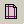
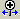
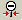
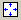
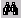

Tms Postのメニュー項目は以下のようになります。メニューよりTms Postの各操作を行います。以下に各メニューの説明をします。
| [計算結果ファイルを開く] | Tms Post計算結果ファイル(〜.rts)を開きます。 | |
|
[レイアウトの保存] | レイアウトファイル(〜.propety)を保存します。 |
| [印刷プレビュー] | 印刷プレビューを表示します。 | |
|
[印刷] | 印刷を行います。 |
|  | [ページ設定] | 印刷スタイルを設定します。 |
| [プロパティー | RTSファイルの情報を表示します。 | |
| [ファイルの履歴] | 履歴を選択することによりプロジェクトファイルの読み込みを行うことができます。 | |
| [終了] | Tms Postを終了します。 |
| [スケールモード] | スケールモードを選択します。 | |
| [メッシュ] | メッシュ図の表示・非表示を切り換えます。 | |
|  | [拡大] | 描画対象を拡大します。 |
|  | [縮小] | 描画対象を縮小します。 |
|  | [全体表示] | 描画対象を全体表示します。 |
| [ツールバー] | ツールバーの表示・非表示を切り換えます。 | |
| [ステータスバー] | ステータスバーの表示・非表示を切り換えます。 | |
| [最新の情報に更新] | メイン画面の図を最新の情報に更新します。 |
| [ステップ] | 描画を行いたいステップを選択します。 | |
| [変位スケール] | 基準とする変位スケールを選択します。 | |
| [変位凡例] | 変位の凡例を描画するか否かを選択します。 | |
| [変位前のメッシュ] | 計算前のメッシュを描画するか否かを選択します。 | |
| [ベクトルアイテム] | 描画を行いたいベクトルアイテムを選択します。 | |
| [ベクトルスケール] | 基準とするベクトルスケールを選択します。 | |
| [ベクトル凡例] | ベクトルの凡例を描画するか否かを選択します。 | |
| [コンタアイテム] | 描画を行いたいコンタアイテムを選択します。 | |
| [コンタ配色] | コンタに使用する描画色を選択します。 | |
| [コンタ凡例] | コンタの凡例を描画するか否かを選択します。 | |
| [コンタ値設定] | 任意のコンタ値を設定します。 | |
| [設定] | 描画に関する各種設定を行います。 |
| [分布図] | 分布図のグラフウィンドウを表示します。 | |
| [時系列図] | 時系列図のグラフウィンドウを表示します。 | |
| [イメージコピー] | 現在表示中の図をクリップボードにコピーします。 | |
| [オプション] | オプションの設定を行います。 |
| [アドインマネージャ] | アドインマネージャを起動します。 |
| [目次] | ヘルプを表示します。 | |
| [キーワード] | キーワードによりヘルプファイルを表示します。 | |
|  | [検索] | トピックの検索を行います。 |
| [バージョン情報] | バージョン情報を表示します 。 |